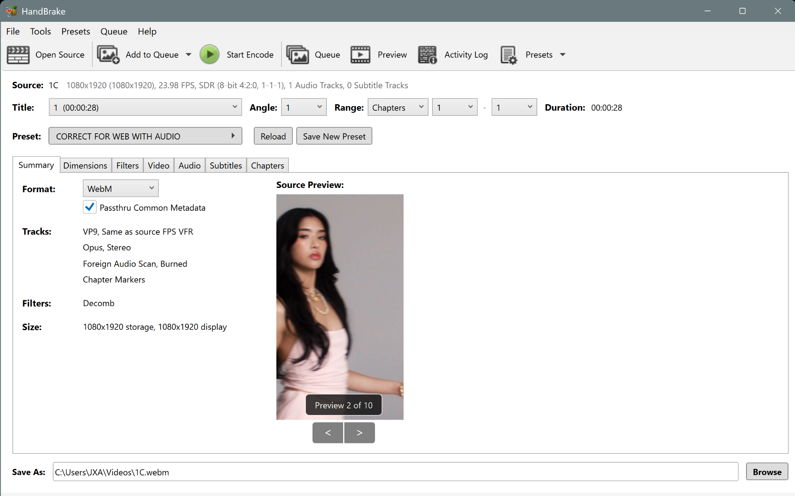
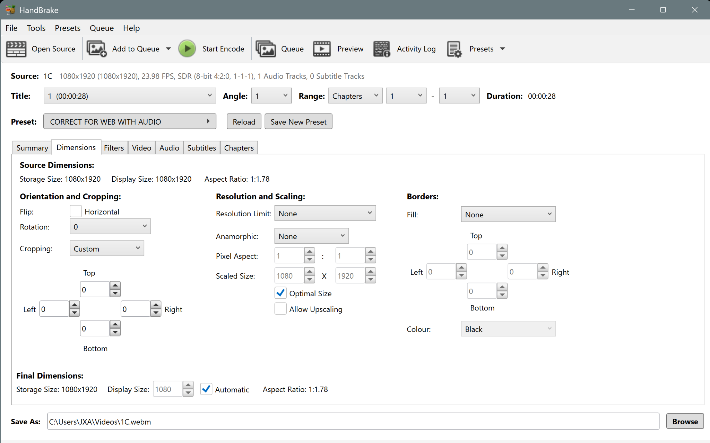
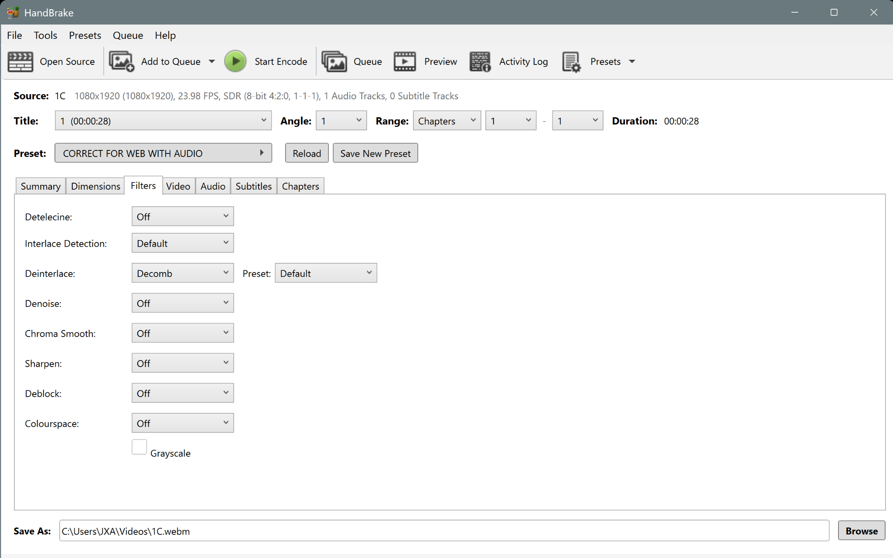
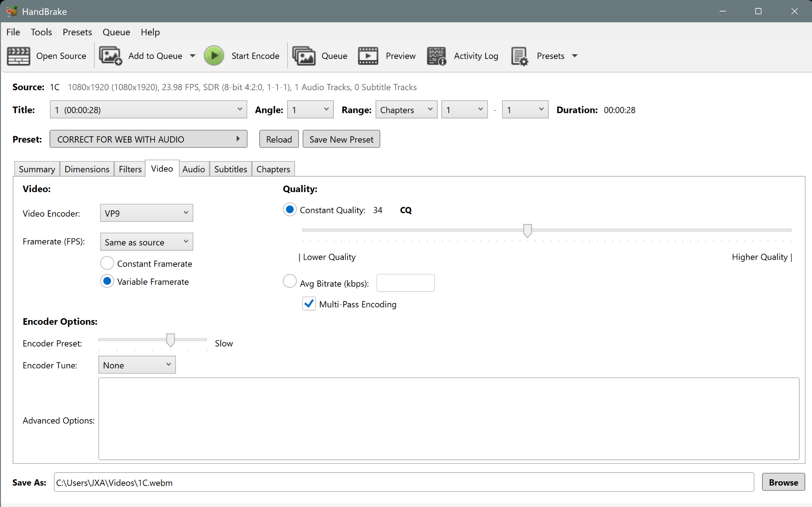
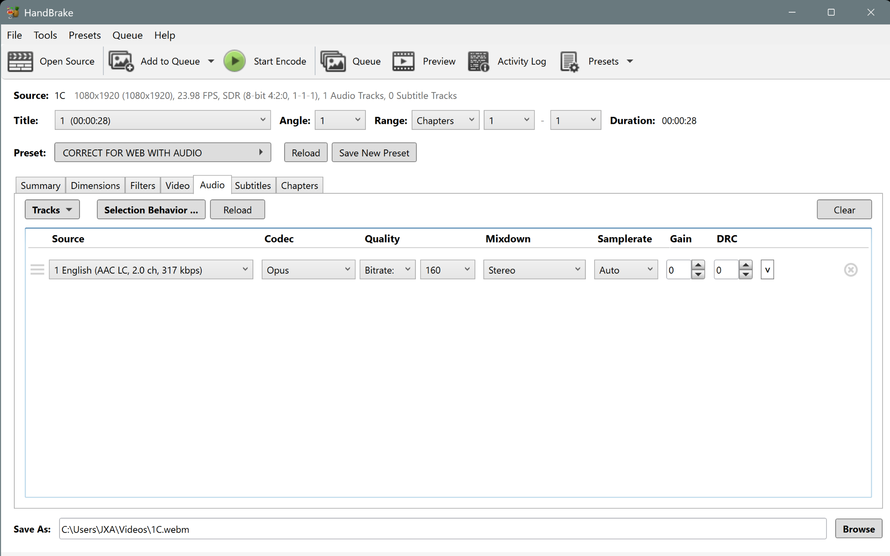
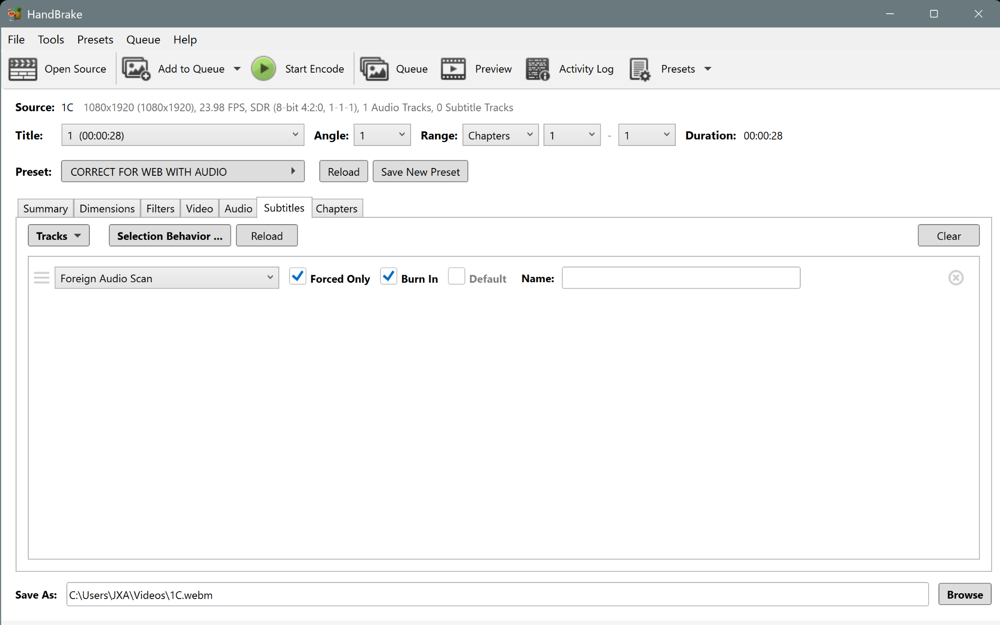
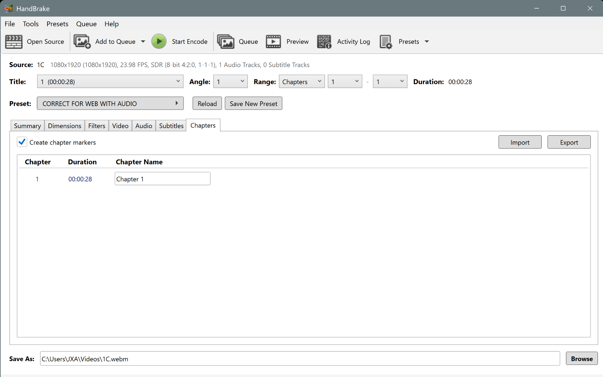

Maison Magnolia user manual
An overview of how to maintain the Maison Magnolia website.
Text, links, names, experts, and media can be updated inside the existing templates. Contact a coder for changes to layout, navigation, interactions, video loading, or caching.
Routine update
Use the template exactly
Coder
01
▶
Internet + hosting
Your computer edits the site. GitHub stores the shared code. Cloudflare publishes it close to visitors.
02
▶
Homepage structure
This coded preview shows the order and basic shape of the live homepage without loading the public site inside the guide.
Open the live homepage ↗
Currently viewing
Landing
MAISON MAGNOLIA◎
Intro Explore About Collaborations Experts
MM
Maison Magnolia creates social-first creative systems, campaigns, and visual worlds.
Highlighted phrases use the Maison Magnolia green.
CONTACT LINKEverything is on the menu.
BRAND
ASOSAMIBALMAINBOSSGIVENCHYHUGOMIU MIUPANDORAPRADARABANNETUMI
Frannie Petok FOUNDER · CREATIVE
Expert name ROLE · @HANDLE
Expert name ROLE · @HANDLE
Expert name ROLE · @HANDLE
03
▶
Repository map
The colors connect each file in the folder tree to its role in the file map.
Homepage
Brand pages
Shared media
Core assets
maison-magnolia/
├── index.html
├── projects/
│ ├── ami.html
│ ├── pandora.html
│ └── other brand pages
├── assets/
│ ├── css/
│ │ ├── main.css
│ │ └── brand-nav.css
│ ├── js/
│ │ ├── main.js
│ │ ├── mm-media.js
│ │ └── brand-nav.js
│ └── img/
├── favicon.svg
├── favicon.ico
└── apple-touch-icon.png
04
▶
Workflow
Install the tools once. Use a separate branch for each update, then push the branch to GitHub for review.
Required for terminal commandsInstall Git ↗
Visual Git workflowInstall GitHub Desktop ↗
Edit the website filesInstall VS Code ↗
Preview the site locallyInstall Live Server ↗
Open the GitHub invitation and join the repository.
Download the repository to the computer.
Create a branch for the update.
Work in VS Code and preview with Live Server.
Save the update and send the branch to GitHub.
Approve the branch and publish it.
VS Code shortcuts
Ctrl/Cmd + F find in the open file · Ctrl/Cmd + Shift + F search the repository · View → Terminal opens the terminal.
Add another user ↗
Repository → Settings → Collaborators → Add people
git clone https://github.com/OWNER/REPOSITORY.gitcd REPOSITORYgit pull origin maingit checkout -b describe-the-updategit statusgit add .git commit -m "Describe the update"git push -u origin describe-the-updateReplace OWNER/REPOSITORY with the repository address and replace describe-the-update with a short branch name such as add-pandora-media.
05
▶
Uploading media
Homepage videos and brand-gallery videos are hosted differently.
HomepageCloudflare Stream
Use Stream for homepage gallery tiles and selected mobile collaboration videos.
- Upload the video to Stream.
- Copy the iframe URL.
- Replace the existing iframe URL in
index.html. - Keep the existing iframe attributes.
Code pattern
<iframe
src="STREAM_IFRAME_URL"
loading="lazy"
allow="autoplay; encrypted-media; picture-in-picture">
</iframe>Brand galleriesR2 / media.maisonmagnolia.com
Use R2-hosted files inside the existing brand-page tile structure. The media loader attaches sources only when needed.
- Upload the file into the correct brand/project folder.
- Copy the public file URL.
- Paste it into an existing image or video tile.
- Keep
data-src, classes, and aspect-ratio class.
Code pattern
<div class="brand-tile r-9-16">
<video muted loop playsinline preload="none">
<source data-src="R2_FILE_URL" type="video/webm">
</video>
</div>
HandBrake setup
▶
Create the web preset
They will not already have this preset. Enter the settings below, then save it as CORRECT FOR WEB WITH AUDIO.
Select one finished video so every HandBrake tab becomes available.
Copy the Summary, Dimensions, Filters, Video, Audio, Subtitles, and Chapters settings below.
Name it CORRECT FOR WEB WITH AUDIO.
Choose a clear .webm filename and click Start Encode.
Upload the finished WebM and copy its public URL.

Open screenshot
Summary
Container and track summary
- Format
- WebM
- Passthru Common Metadata
- Checked
- Expected video summary
- VP9 · Same as source FPS · VFR
- Expected audio summary
- Opus · Stereo
- Subtitles summary
- Foreign Audio Scan · Burned
- Chapter markers
- Included

Open screenshot
Dimensions
Keep the source shape
- Flip Horizontal
- Unchecked
- Rotation
- 0
- Cropping
- Custom
- Crop Top / Bottom / Left / Right
- 0 / 0 / 0 / 0
- Resolution Limit
- None
- Anamorphic
- None
- Pixel Aspect
- 1 : 1
- Optimal Size
- Checked
- Allow Upscaling
- Unchecked
- Borders Fill
- None
- Border Top / Bottom / Left / Right
- 0 / 0 / 0 / 0
The screenshot shows a 1080 × 1920 vertical source. Do not force every video to that size; preserve the source aspect ratio and do not upscale it.

Open screenshot
Filters
Use only Decomb
- Detelecine
- Off
- Interlace Detection
- Default
- Deinterlace
- Decomb
- Decomb Preset
- Default
- Denoise
- Off
- Chroma Smooth
- Off
- Sharpen
- Off
- Deblock
- Off
- Colourspace
- Off
- Grayscale
- Unchecked

Open screenshot
Video
VP9 WebM compression
- Video Encoder
- VP9
- Framerate (FPS)
- Same as source
- Framerate mode
- Variable Framerate
- Quality mode
- Constant Quality
- CQ value
- 34
- Multi-Pass Encoding
- Checked
- Encoder Preset
- Slow
- Encoder Tune
- None
- Advanced Options
- Leave blank

Open screenshot
Audio
Keep web audio
- Source
- Use the main source audio track
- Codec
- Opus
- Quality control
- Bitrate
- Bitrate
- 160 kbps
- Mixdown
- Stereo
- Samplerate
- Auto
- Gain
- 0
- DRC
- 0
The exact source-track name and original bitrate will change from video to video. The output settings above should remain the same.

Open screenshot
Subtitles
Foreign audio scan
- Track
- Foreign Audio Scan
- Forced Only
- Checked
- Burn In
- Checked
- Default
- Unchecked
- Name
- Leave blank

Open screenshot
Chapters
Keep chapter markers
- Create chapter markers
- Checked
- Chapter name
- Leave the default name
The duration shown in the screenshot belongs only to that example video.
Final step
Save the custom preset
- Click Save New Preset near the preset menu.
- Name it
CORRECT FOR WEB WITH AUDIO. - Save it. It will now appear in the Presets menu for future videos.
- Before every encode, confirm the source dimensions and output filename.
Use this preset for:
Brand-gallery videos uploaded directly to Cloudflare R2. Encode the finished video as WebM, upload it to the correct R2 folder, copy its public
media.maisonmagnolia.com URL, and paste that URL into the existing brand-page video tile.
Why they are different:
Stream handles playback for selected high-visibility videos. Brand pages use lazy-loaded R2 files so a phone does not download every gallery video at once.
06
▶
Brand pages + experts
Duplicate an existing brand page. Keep the same wrappers, classes, and matching section IDs.
Duplicate a working brand file.
Rename the file and page title.
Change project links and matching anchor IDs.
Paste media into existing tile patterns.
Add experts inside #mmBrandData.
Add the brand to the BRANDS list.
Experts JSON pattern
{
"sections": {
"project-section-id": [
{ "name": "Expert name", "meta": "Role · @handle" }
]
}
}
07
▶
Media queries
The current CSS already changes the layout for desktop, tablet, and phone.
Text edits, names, links, media swaps, reordered tiles, copied project sections.
New layouts, new navigation, new interactions, new columns, changed video-loading logic.
Media query pattern
@media (max-width: 900px) {
/* tablet rules */
}
@media (max-width: 520px) {
/* phone rules */
}
08
▶
Design system
These values come from the current site styles.
#19a84b#e864ba#ffffff#0a0a0a
Font
Montserrat
400 regular · 600 medium · 800 bold
font-family: "Montserrat", system-ui, sans-serif;
09
▶
Test + publish + maintenance
Preview every update locally before pushing it to GitHub.
Video lesson
Install and use Live Server in VS Code
Watch on YouTube ↗
This review is already scheduled. Leave the cache and media-loading architecture unchanged during routine content updates.
10
Resources
Official downloads, manuals, and beginner references used throughout this guide.
HB
HandBrake
HandBrake manual ↗
Download + install ↗
Quick-start manual ↗
Preset reference ↗